Home / Past papers / MLT Quiz 1 / this paper
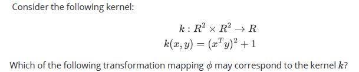
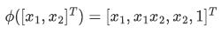
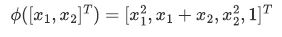
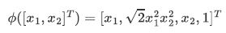
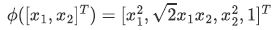
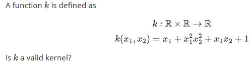
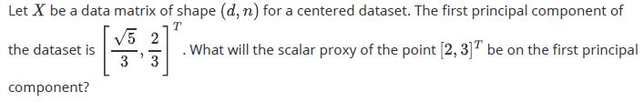
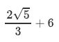
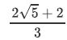
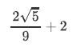
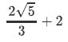
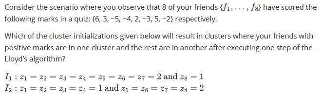
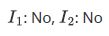
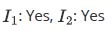
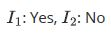
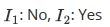
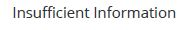
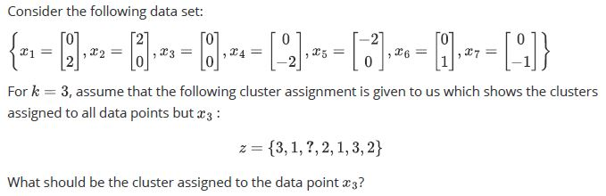
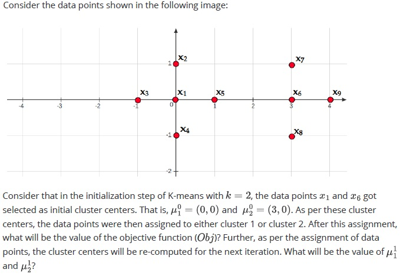
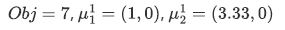
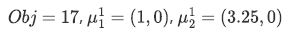
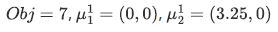
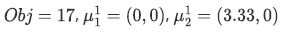
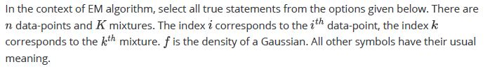
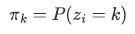
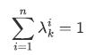
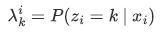
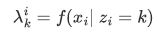
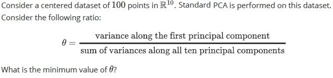
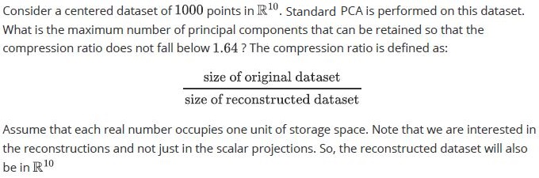
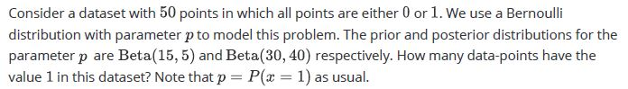
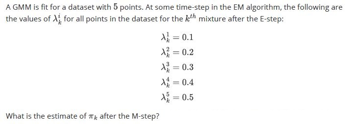
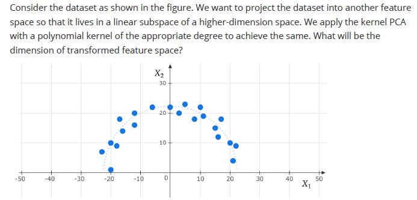
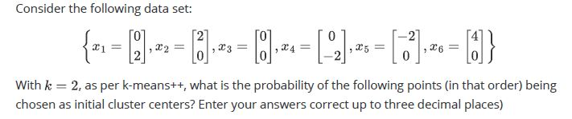
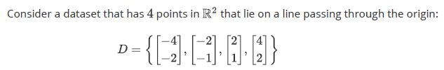
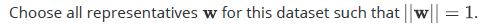
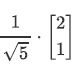
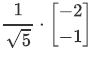
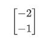
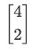
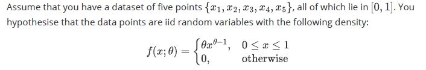
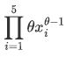
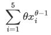
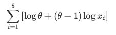
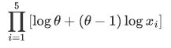
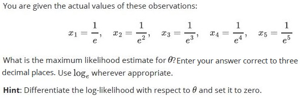
Auto-generated summary from the source site. Handy as a checklist; the lessons above explain each idea from scratch.
Kernel Functions: Functions that compute the inner product of two vectors in a high-dimensional space without explicitly transforming the vectors.
Transformation Mapping (): Maps data to a higher-dimensional space.
Principal Components: Directions in which the data varies the most.
Variance and Compression Ratio:
K-Means and Lloyd’s Algorithm:
K-Means++: Probabilistic method for choosing initial cluster centers to improve convergence.
EM Algorithm: Iterative method for finding maximum likelihood estimates of parameters in probabilistic models.
GMM Parameters:
Bernoulli Distribution: Models binary outcomes.
Beta Distribution: Conjugate prior for the parameter of a Bernoulli distribution.
Log-Likelihood: Logarithm of the likelihood function.